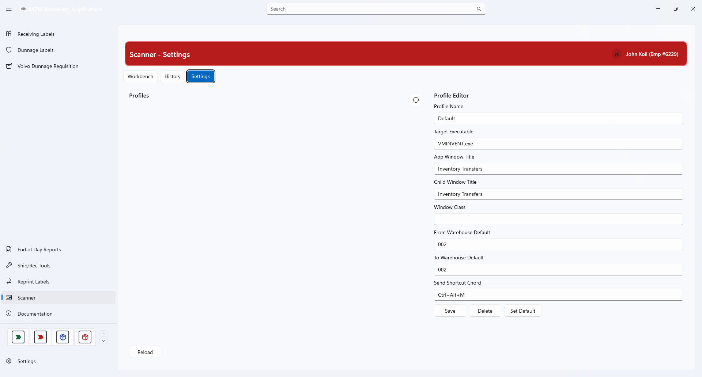

Scanner Profiles & Settings
A profile tells Scanner how to drive Infor Visual — which program to use, which window to type into, and which shortcut triggers a send. Most operators never need to change anything here.
What a Profile Is
Scanner does not talk to Infor Visual behind the scenes — it drives the same windows you would use by hand. A profile is the set of instructions it follows:
- Which program to start or find.
- Which window title to wait for before typing.
- Which warehouse numbers to use by default.
- Which keyboard shortcut performs the send.
Different sites, or different Infor Visual versions, can need different values — that is why the profile is editable rather than fixed in the program.
Working with Profiles
The tab splits in two. The left side lists every profile; the right side is the editor for whichever profile is selected.


Profile list (left) · profile editor (right)Pick a profile from the list
Click a profile. Its current settings load into the editor on the right.
Change the fields you need
See Profile Fields below for what each one means.
Press Save
Nothing is written until you save. The message strip confirms “Scanner profile saved.”
Profile Fields
| Field | What it means |
|---|---|
| Profile Name | A label for the profile. Must be unique — you cannot save two profiles with the same name. |
| Target Executable | The Infor Visual program Scanner starts or looks for. Required. |
| App Window Title | The main window title Scanner waits for before it starts typing. |
| Child Window Title | The inner window Scanner expects to work in. Required. |
| Window Class | A technical hint used to tell the right window apart from others with a similar title. |
| From Warehouse Default | The warehouse number pre-filled on the From side. |
| To Warehouse Default | The warehouse number pre-filled on the To side. |
| Send Shortcut Chord | The key combination that performs a send, for example Ctrl+Alt+M. |
Save, Delete, Set Default
| Button | What it does |
|---|---|
| Save | Writes the fields you changed back to the profile. |
| Delete | Removes the selected profile. Select a profile first. |
| Set Default | Makes the selected profile the one Scanner uses automatically. Select a profile first. |
Each action confirms itself in the message strip — for example “Default scanner profile updated.” If you press Delete or Set Default without a profile selected, Scanner tells you to pick one first.
Scanner Access
Who may use Scanner is controlled separately, from the main application settings rather than from this tab.
- Open Settings from the left-hand navigation bar.
- Choose the Scanner Access card.
- Add or remove employee numbers, then save.
- The list applies to every workstation at once.
- Only administrators and developers can see the Scanner Access card.
- Each affected operator sees the change the next time they open Scanner.
- While the list is empty, Scanner falls back to its built-in developer rule.